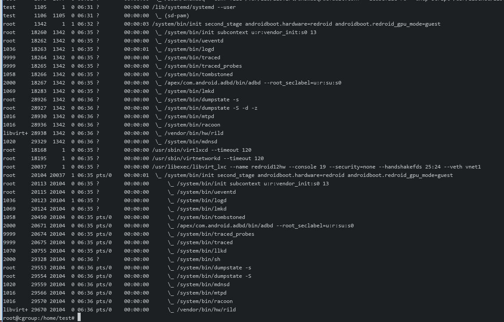

20250627
1. lxc/libvirt verification(ubuntu20.04)
Steps:
modprobe binder_linux devices="binder,hwbinder,vndbinder"
$ uname -r
5.4.0-216-generic
Under the 5.4.x kernel(won't start up):
root 6352 1 0 03:53 ? 00:00:00 /usr/libexec/libvirt_lxc --name redroid12hw --console 20 --security=none --handshakefds 28:27 --veth vnet335
root 6355 6352 0 03:53 ? 00:00:00 \_ /usr/libexec/libvirt_lxc --name redroid12hw --console 20 --security=none --handshakefds 28:27 --veth vnet335
Change to 5.15.0-139 via apt install -y linux-image-generic-hwe-20.04, could not run libvirt_lxc(official 6.0.0.).
Download libvirt-6 and verify:
tar xJvf libvirt-6.6.0.tar.xz
cd libvirt-6.6.0
mkdir build
apt install -y python3-pip libtirpc-dev
cd build
../configure --with-lxc --with-interface --with-init-script=systemd --prefix=/usr
make -j8
make install
systemctl enable libvirtd
systemctl enable --now virtqemud.socket
systemctl enable --now virtlxcd.socket
systemctl enable --now virtnetworkd
reboot
Change to /usr/libexec/libvirt_lxc, then start the instance.
Stuck on :
root 5971 1 0 06:22 ? 00:00:00 /usr/libexec/libvirt_lxc --name redroid11
Build 8.0.0 version:
tar xJvf libvirt-8.0.0.tar.xz
cd libvirt-8.0.0
make modifications(`https://bugzilla.opensuse.org/attachment.cgi?id=863686&action=diff`):
root@cgroup:/home/test# diff libvirt-8.0.0/src/lxc/lxc_process.c 8/libvirt-8.0.0/src/lxc/lxc_process.c
56,58d55
< #include "virstring.h"
< #include "vircgroupbackend.h"
< #include "virsystemd.h"
1202,1206d1198
< virCgroupBackend **cgroupBackends = virCgroupBackendGetAll();
< g_autofree char *pidFile = NULL;
< g_autofree char *pidStr = NULL;
< g_auto(GStrv) pidList = NULL;
< pid_t checkPid = 0;
1476,1497d1467
< /* In an environment with hybrid cgroups and systemd the v2 backend is not available.
< * Systemd however depends on V2 for unit naming. This causes the next two checks to fail.
< * To work around this issue we retrieve the actual container pid and check on that instead. */
< if (virSystemdHasMachined() == 0 && cgroupBackends[VIR_CGROUP_BACKEND_TYPE_V2]->available() == false) {
< pidFile = g_strdup_printf("/proc/%lld/task/%lld/children", (long long int)vm->pid, (long long int)vm->pid);
< if (virFileReadAll(pidFile, 1024 * 1024, &pidStr) < 0)
< goto cleanup;
<
< virTrimSpaces(pidStr, NULL);
<
< pidList = g_strsplit(pidStr, " ", 2);
< if (!pidList)
< goto cleanup;
<
< if (virStrToLong_i(pidList[0], NULL, 10, &checkPid) < 0)
< goto cleanup;
<
< } else {
< checkPid = vm->pid;
< }
<
<
1507c1477
< checkPid, -1, priv->machineName,
---
> vm->pid, -1, priv->machineName,
configure/build/make install
Result: redroid11 still not start OK.

Change the kernel options:
systemd.unified_cgroup_hierarchy=1
update-grub2 && reboot
Lots of defucnct in redroid11:

redroid12, also not ok:

Reverse the changes for lxc_process.c and rebuild, reboot.
root@cgroup:/home/test# virsh -c lxc:/// start redroid12hw
error: Failed to start domain 'redroid12hw'
error: error from service: GDBus.Error:org.freedesktop.machine1.NoMachineForPID: PID 1360 does not belong to any known machine
have to adjust the cgroupfs now.
2. xrandr set
for getting 1920x1080 resolution commands:
xrandr --newmode $(gtf 1920 1080 60 | grep Modeline | sed s/Modeline\ // | tr -d '"')
xrandr --addmode VGA-1 1920x1080_60.00